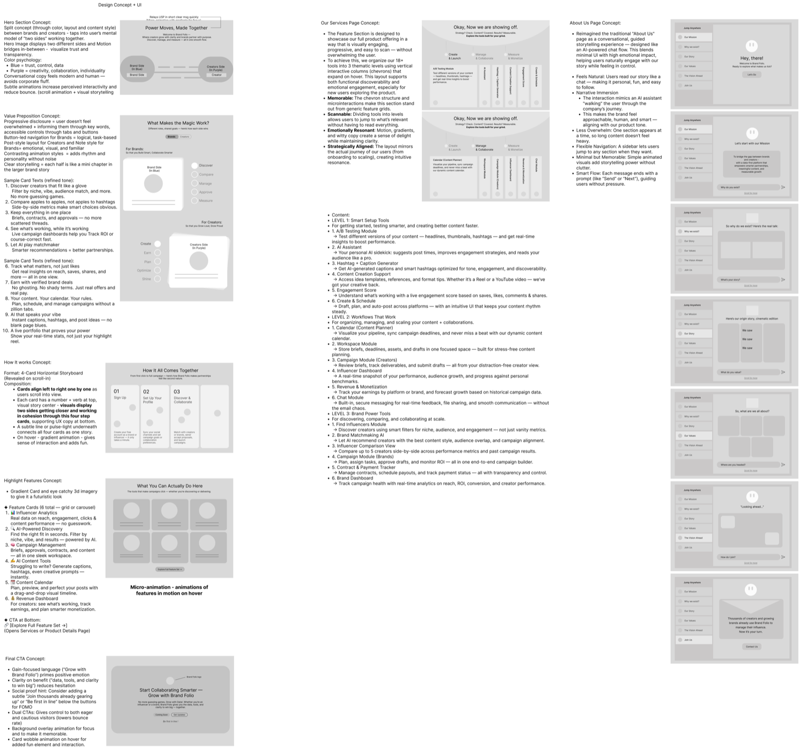
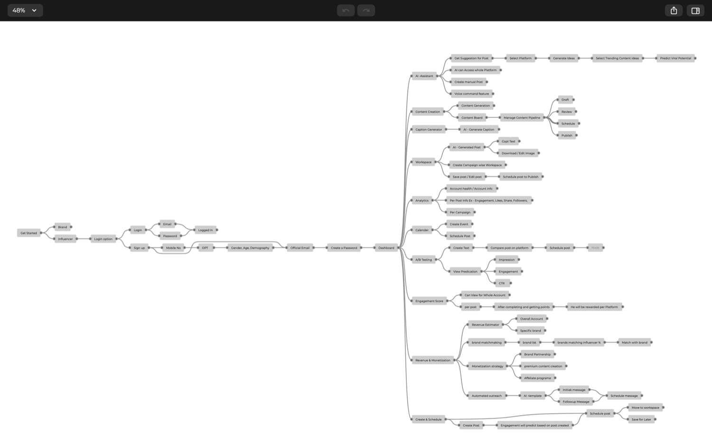
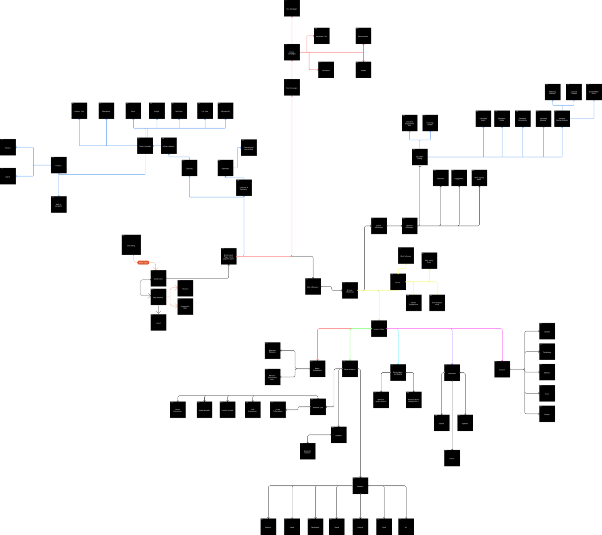
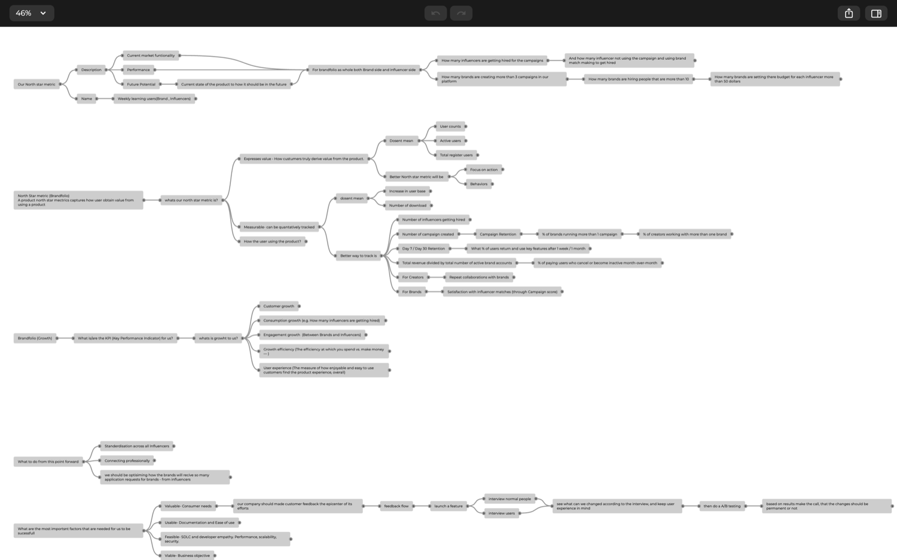
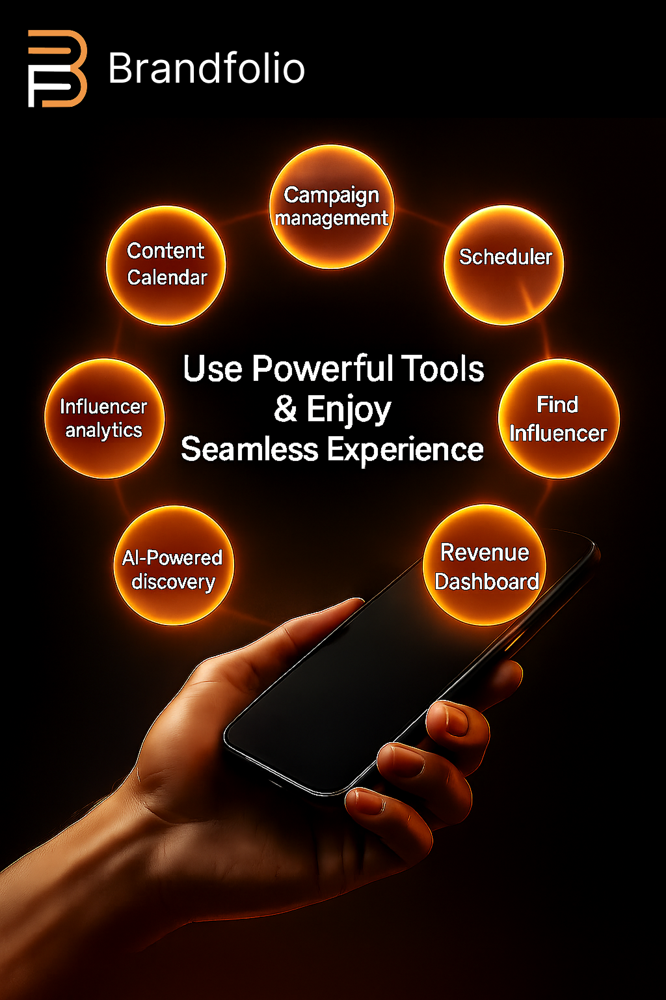
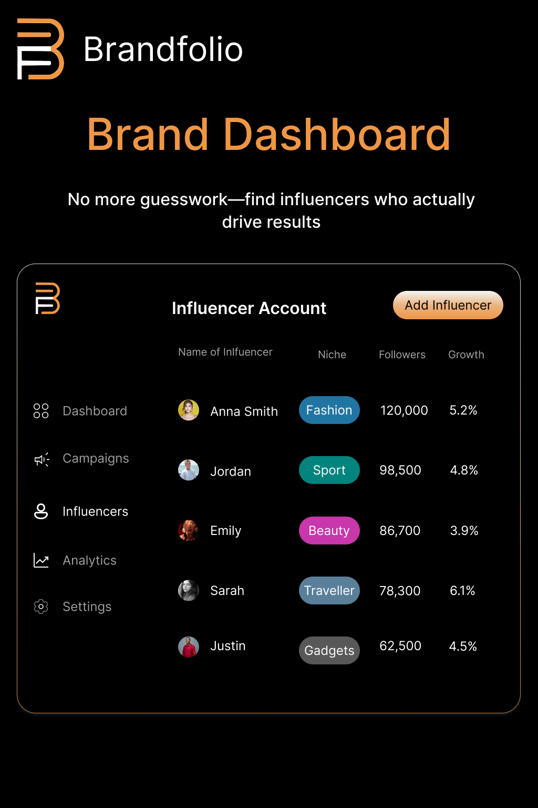

Brandfolio AI is a two-sided platform connecting early-stage brands with creators. I built it from idea to live website, covering the product, wireframes, marketing plan and content. Open the full case study below.
| Role | Associate Product Manager (product building, marketing plan, designs, user personas) |
| Timeline | June to September 2025 |
| Market | B2B (brands) and B2C (influencers) |
| Live site | brandfolio.ai |
| Tools | Figma (wireframes and designs), Sora and other AI tools (posters), Excel (competitor analysis and media plan) |
1. Overview
Brandfolio connects people: it gives creators a stage to show their work and get hired, and gives brands a way to find the right creator. For brands it is like shopping for clothes: they know they need something, but not which style, how creative or minimal it should be, or what it should represent. That makes the brand's persona central to every match.
Target audience: low-to-mid-tier brands that are just starting out or want to build presence, and creators who want to start their professional journey.
2. The Problem
Pain points from my research
- A difficult, lengthy process to onboard an influencer and reach a trusted platform.
- Hard to find a matching feature or system for both influencers and brands.
- Trust issues: why would any brand or influencer join this platform?
- Little awareness of the different ways influencers and brands can get connected.
- Incomplete information about the brand or influencer.
- Misleading information and unclear work requirements before applying.
Pre-MVP pain points
| Area | What goes wrong |
|---|---|
| No structured workflow | Brands give inconsistent briefs, so influencers don't know what's expected. Revisions, rejections and approvals are disorganised. |
| Delayed or uncertain payments | No transparency or consistency in payment timelines, and influencers are left chasing brands for dues. |
| Lack of support tools | No built-in content planning, caption writing or performance dashboards, and it's hard to manage multiple brand deals at once. |
| Finding relevant influencers | No central platform for authentic discovery, so brands rely on outdated Excel sheets, agencies or DMs. |
| Lack of data for selection | No detailed analytics (engagement rate, audience demographics, fake followers), so decisions come from gut feel or follower count rather than ROI. |
| Manual campaign coordination | Tedious communication over WhatsApp or email, with no campaign dashboard to track progress. |
| Payment and contract chaos | Manual, unclear payment processes with no standard contracts or record of deliverables. |
| No benchmarking | Brands can't compare influencers side by side across parameters. |
3. Target Market
Brands (B2B)
- SMBs in retail, e-commerce, D2C and lifestyle that want influencer-driven growth without in-house expertise.
- Marketing teams in mid-to-large companies looking for measurable campaign ROI.
- Startups and emerging brands seeking fast awareness and niche audiences.
High-potential industries: Fashion and Apparel, Beauty and Skincare, Food and Beverages (including cloud kitchens), Consumer Electronics, EdTech, Health and Wellness, Travel and Hospitality.
Influencers (B2C)
- Micro and nano influencers (1K to 100K followers): strong engagement, niche audiences, underserved by big platforms.
- Mid-tier influencers (100K to 500K followers): looking for consistent deals and better monetisation tools.
- Aspiring influencers: need resources for content creation, brand matchmaking and monetisation.
Platforms: Instagram, YouTube, TikTok (non-India markets), LinkedIn (B2B collaborations).
4. Competitive Landscape
Here is the list of existing products I analysed:

5. Product Thinking: Questions I Answered After the MVP
What is this app about?
What are the unique features?
How will influencers connect to brands?
How will brands find the right influencer (and vice versa)?
6. User Flows
Influencer side

Brand side

7. Wireframes and Website
I created the wireframes and designs myself, took the website live (not coded by me), bought the domain and set up all the social media handles.
Live site: brandfolio.ai
8. Success Metrics

9. Go-To-Market
Marketing strategy
MARKETING TIMELINE bRANDFOLIO .pdf
Marketing budget (media plan)
Marketing KPI framework
Key terms: MQL (Marketing Qualified Lead), SQL (Sales Qualified Lead), CPL (Cost Per Lead), CAC (Customer Acquisition Cost).
| Stage | KPI | Suggested target |
|---|---|---|
| Awareness | Website traffic (monthly) | 10 to 30% MoM growth (track new vs. returning) |
| Awareness | Social media reach | 5,000 to 10,000+ per platform per month |
| Awareness | Content views (blogs, videos) | 2,000+ views per month |
| Awareness | Email open rate | 25 to 35% |
| Engagement | Email CTR | 2 to 4% |
| Engagement | Social media engagement rate | 1 to 3% per post |
| Lead generation | MQLs | 100 to 300 per month |
| Lead generation | SQLs | 40 to 100 per month |
| Lead generation | Landing page conversion rate | 15 to 25% |
| Conversion | Lead-to-customer conversion rate | 10 to 20% |
| Conversion | ROI of marketing spend | 3x to 5x |
(CPL varies by channel, and monthly new customers and a profitable CAC ceiling are set against revenue targets.)
Creative: posters made with Sora and other AI tools


Content: blog articles I wrote
BrandFolio_ Reimagining Influencer Marketing for Brands and Creators.docx
From Cold DMs to Smart Deals_ How Influencer Marketing Is Evolving in 2025.docx
Micro, Macro, or Nano_ Which Influencer Type Is Right for Your Brand.docx
Why Talented Influencers Aren’t Getting Hired (And How BrandFolio Is Solving It).docx
10. Learnings and Challenges
Learnings
- Stick to solving the problem statement and don't add extra features.
- Understand the factors that shape influencer and brand psychology.
- Work in a team with people from different backgrounds.
Challenges
- Finding end users across different types of people.
- Creating criteria for matching brands with the right influencer, and vice versa.
- Simplifying how influencers get hired and how brands meet the right influencer.
- Creating authenticity and building trust between brands and influencers.